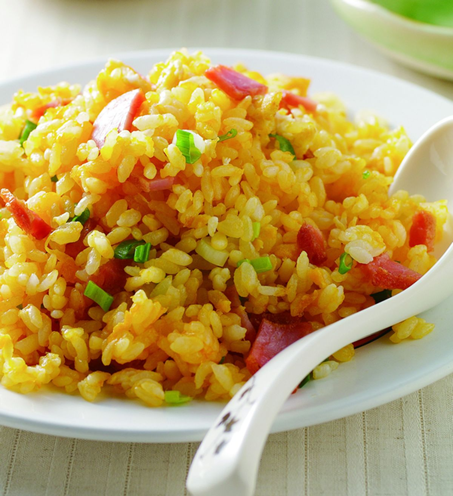

Egg fried rice is a classic homemade dish
that is popular in many Asian households.
Growing up in China,
I often enjoyed egg fried rice as a quick and comforting meal.
Made with simple ingredients like rice, eggs, and green onions,
this recipe is easy to prepare and perfect for a busy day.
蛋炒饭是一道经典的家常菜，
在许多亚洲家庭中都很受欢迎。
在中国长大的我，从小就喜欢吃蛋炒饭，
因为它简单、美味，又让人感到温暖。
只需要米饭、鸡蛋、葱花等常见食材，
就能快速做出一道适合忙碌生活的美食。

Photo credit: YTower Recipe
Watch this video to learn how to make golden egg fried rice!
观看这个视频，学习如何制作美味的蛋炒饭！